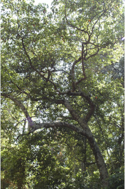

Images :



| Habit : | Trees up to 18 m tall. |
| Leaves : | Leaves simple , alternate , spiral , clustered at twig ends; stipules small, lanceolate , caducous ; petiole 1.2-4 cm long, swollen at both ends, planoconvex , glabrous , with subulate appendage at the junction of lamina ; lamina 5.5-12.5 x 2.5-5 cm, elliptic , apex acuminate with blunt tip, base acute , margin serrate , chartaceous , glabrous , red when senescent ; midrib slightly raised above; secondary_nerves 5-9 pairs, branched with glabrous domatia at axils beneath; tertiary_nerves reticulo-percurrent ; higher order reticulation slender, minute. |
| Inflorescence / Flower : | Inflorescence racemes ; flower petals white, laciniate , anthers ciliate . |
| Fruit and Seed : | Drupe , oblong or ovoid to 2.5 cm long; seeds 3-4. |